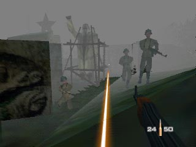
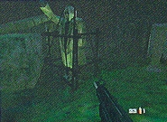
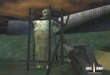
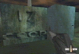
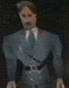
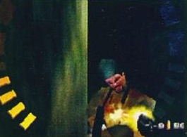
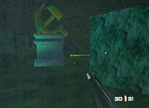

|
| Goldeneye
Version Beta : Statue |
| Pas
grand-chose non plus pour ce Niveau. Ci-dessous, on voit qu'au début,
la Brume était plus présente, et beaucoup plus claire.
Notez le KF7 Beta. |

Ci-dessous,
on voit que la Statue de Lénine a changé de place, rendant
le Lieu de Rendez-vous plus simple et plus dégagé. L'autre
Image montre une Statue de Lénine modifiée existant dans
la Version Finale. La meme que celle de Gauche ? |


Ci-dessous, une image plus connue, montrant Bond avec un AR33. Comme le Laser, il semble que cette Arme était bien plus présente avant. A Droite, meme photo, mais version Finale. Notez le Changement de Teinte du Bloc CCCP-17. |


Un Truc Bizarre : Le St Petersburg Guard... N'existe pas dans le Mode Solo ! C'est bizarre mais c'est comme ça. Il semble qu'on le rencontrait dans ce Niveau ! Photo au Milieu, un Garde Beta avec la Face de Cicatrice. Photo à Droite, la Statue de Marteau et Faucille n'est plus à la meme place. |


